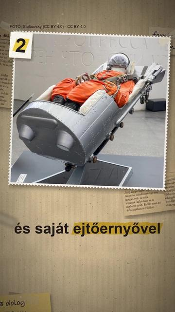

Megnézem a YouTube-on3 dolog, amit nem tudtál Jurij Gagarinról
Röviden: Jurij Gagarin 1961. április 12-én az első emberként járt a világűrben, a Vosztok–1 fedélzetén.
Jurij Gagarin 1961. április 12-én az első emberként járt a világűrben, a Vosztok–1 fedélzetén. Indításkor annyit mondott: „Pojehali!”, azaz „Indulás!”. Mindössze 1,57 méter magas volt, és a szűk Vosztok-kabinban ez is mellette szólt. Nem az űrhajójában ért földet: kb. 7 km magasan katapultált, és saját ejtőernyővel szállt le. A rekordokat hitelesítő FAI szabálya szerint a pilótának az űrhajójában kellett volna földet érnie, de a szovjetek ezt a részletet kihagyták a beadott iratokból. A leszállás után egy helybéli asszony és az ötéves unokája találkozott vele: megijedtek a narancssárga ruhás alaktól, Gagarin pedig azzal nyugtatta meg őket, hogy telefont kell találnia, amellyel felhívhatja Moszkvát. A teljes repülés 108 percig tartott. Források: ESA, NASA, Smithsonian National Air and Space Museum, FAI (lent).
Az összes rész forrásokkal: https://valoban.pages.dev/
Források
- ESA: Yuri Gagarin
- ESA: The flight of Vostok 1
- NASA: April 1961 – First Human Entered Space
- Smithsonian NASM: Why Yuri Gagarin Remains the First Man in Space
- Smithsonian NASM: Racing to Space
- FAI: Anniversary of the first human in space (2021)
- RussianSpaceWeb: Vostok-1 landing
- The Moscow Times (2021-04-12)
8 forrás · Hogyan ellenőrzünk?
Hibát találtál? Írd meg nekünk, megnézzük.
Képek és kreditek
• Jurij Gagarin helsinki sajtótájékoztatóján, 1961 (Arto Jousi felvétele) – Arto Jousi / Suomen valokuvataiteen museo; restaurálta: Adam Cuerden, Public domain (https://creativecommons.org/publicdomain/mark/1.0/) https://commons.wikimedia.org/?curid=79901445
• A Vosztok–1 űrhajó mása (K. E. Ciolkovszkij Űrhajózástörténeti Múzeum) – Stolbovsky (CC BY 4.0), CC BY 4.0 (https://creativecommons.org/licenses/by/4.0/) https://commons.wikimedia.org/?curid=117843513
• A Vosztok űrhajó metszetrajza a pilóta ülésével (NASA) – NASA, Public domain (https://creativecommons.org/publicdomain/mark/1.0/) https://commons.wikimedia.org/?curid=23284968
• A Vosztok–5 pilótájának katapultülése (K. E. Ciolkovszkij Űrhajózástörténeti Múzeum) – Stolbovsky (CC BY 4.0), CC BY 4.0 (https://creativecommons.org/licenses/by/4.0/) https://commons.wikimedia.org/?curid=117814129
• A Vosztok–5 visszatérő kapszulája és a pilóta katapultülése (K. E. Ciolkovszkij Űrhajózástörténeti Múzeum) – Stolbovsky (CC BY 4.0), CC BY 4.0 (https://creativecommons.org/licenses/by/4.0/) https://commons.wikimedia.org/?curid=117813771
• Gagarin szkafanderének mása – Музей Космонавтики (CC0), CC0 (https://creativecommons.org/publicdomain/zero/1.0/) https://commons.wikimedia.org/?curid=131876561
• Jurij Gagarin egy repülőtéren, 1961 (Moszkvai Főlevéltár) – Главархив Москвы (CC BY 4.0), CC BY 4.0 (https://creativecommons.org/licenses/by/4.0/) https://commons.wikimedia.org/?curid=154972906
• A NASA sajtótájékoztatója Gagarin repüléséről, Washington, 1961. április 12. – NASA, Public domain (https://creativecommons.org/publicdomain/mark/1.0/) https://commons.wikimedia.org/?curid=6462781
• A Vosztok űrhajó modellje (Technik Museum Speyer) – R. J. Mathar (CC0), CC0 (https://creativecommons.org/publicdomain/zero/1.0/) https://commons.wikimedia.org/?curid=150792124
• Jurij Gagarin kitüntetéseivel, 1963 (Alekszandr Moklecov felvétele) – Александр Моклецов / Совинформбюро (CC BY 4.0), CC BY 4.0 (https://creativecommons.org/licenses/by/4.0/) https://commons.wikimedia.org/?curid=149891729
A képek módosítva: 9:16-ra kivágva, átméretezve, kameramozgással, ráégetett felirattal.